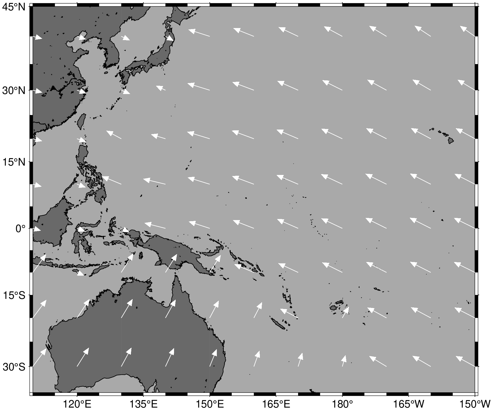
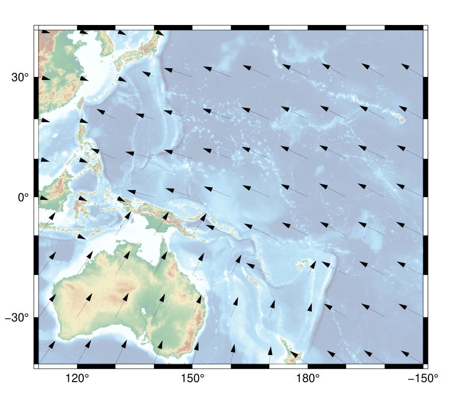

Demonstrations
Please check the README for a quick overview. To follow these demonstrations, it is first necessary to get some plate motion data:
julia> using PlateMotionRequests
julia> latitudes = -40:10:40
julia> longitudes = 110:10:210
julia> GSRMdata = platemotion(
repeat(latitudes, length(longitudes)),
repeat(longitudes, inner = length(latitudes)),
)Acessing response data
The data is stored in a Table. Note that the calculator knows how to handle longitude values greater than 180°, but whatever values are given will also end up in the response table. The number and name of the columns depends on the requested format. To list the available columns, use columnnames:
julia> using TypedTables # install this package using `] add TypedTables`
julia> columnnames(GSRMdata)
(:lon, :lat, :velocity_east, :velocity_north, :plate_and_reference, :model)Columns are accessed as fields of the table, e.g.:
julia> GSRMdata.velocity_east
99-element Vector{Float64}:
40.67
42.17
42.4
41.35
24.79
27.08
28.56
29.17
28.9
34.18
37.13
38.95
⋮
-61.79
-56.93
-50.35
-54.32
-60.03
-63.91
-65.85
-65.81
-63.78
-59.82
-54.05
-46.64Rows are accessed by index, e.g.:
julia> GSRMdata[1]
(lon = 110.0, lat = -40.0, velocity_east = 40.67, velocity_north = 56.92, plate_and_reference = "AU(NNR)", model = "GSRM v2.1")
julia> typeof(ans)
NamedTuple{(:lon, :lat, :velocity_east, :velocity_north, :plate_and_reference, :model), Tuple{Float64, Float64, Float64, Float64, String, String}}For more advanced manipulations, refer to the documentation for TypedTables and Table.
Plate motion map using GMT.jl
To plot the plate motion using GMT we can use the GMT.jl package. Let's also save the data so we can come back and adjust the plot later. The NetCDF writer could be used here, because it automatically puts the data into matrices. This will be convenient for plotting with GMT.
julia> write_platemotion("platemotion.nc", GSRMdata)To read the NetCDF file, the NCDatasets.jl package is recommended. These commands should plot the data as vectors on a map:
julia> using GMT
julia> using NCDatasets
julia> ds = NCDataset("platemotion.nc")
julia> coast(
region = (110, 210, -35, 45),
projection = :Mercator,
frame = :auto,
land = :dimgray,
water = :darkgray,
shore = :thinner,
)
julia> grdvector!(
mat2grid(ds["velocity_east"][:], x = ds["lon"][:], y = ds["lat"][:]),
mat2grid(ds["velocity_north"][:], x = ds["lon"][:], y = ds["lat"][:]),
arrow = (; shape = 0, stop = true, length = 0.2, angle = 45, pen = :white),
fill = :white,
vec_scale = 100,
linecolor = :white,
linewidth = :thinner,
show = true,
)

Plate motion map using GMT
If the GMT.jl package isn't working, well... help us fix it! But if you really want to use command line GMT, just save the data to a text file:
julia> write_platemotion("platemotion.dat", GSRMdata)This example GMT script should plot the data as vectors on a map. In general, the scaling parameters will need to be adjusted depending on the map size. You might also need to re-download the data using format = "psvelo".
#!/bin/sh
gmt begin platemotion
gmt psbasemap -R110/210/-40/40 -JM14c -Baf -BWSen
gmt grdimage @earth_relief_10m -JM -n+a -t60
gmt psvelo platemotion.dat -Se0.015/0.95 -Gblack -W1c,black -h1
gmt end show
